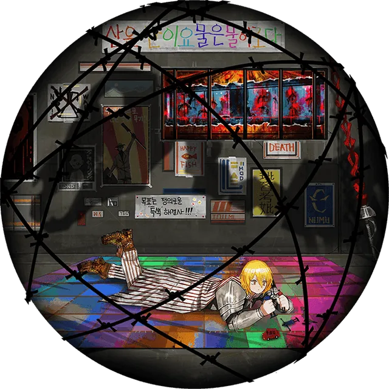

Lust
ZAYIN
La Sangre de Sancho
Gallop on, Rocinante! Justice shall prevail!
E.G.O dasar yang jadi senjata pertama Don Quixote: menusuk dengan Lust, menumpuk 8 Bleed, lalu memulihkan HP sebesar separuh damage yang dihasilkan. Passive-nya menambal 3 HP setiap kali ia menyerang target yang sedang berdarah.
Efek coin & Corrosion →